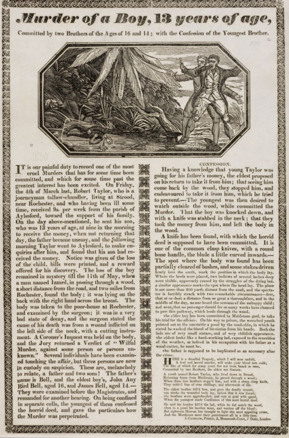
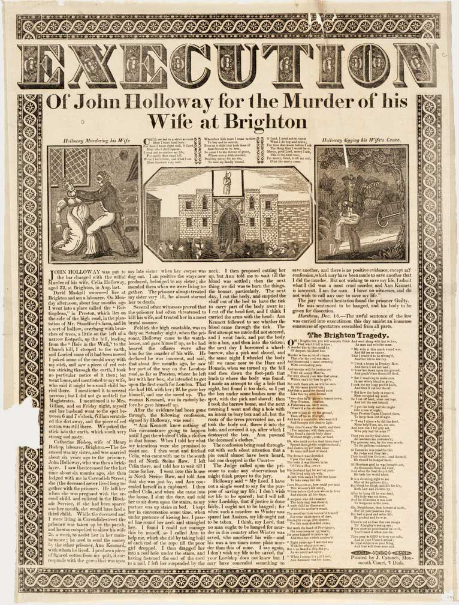
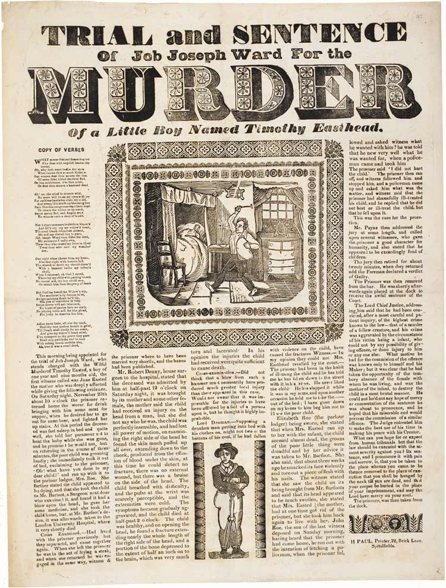
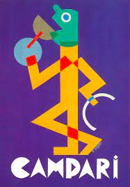
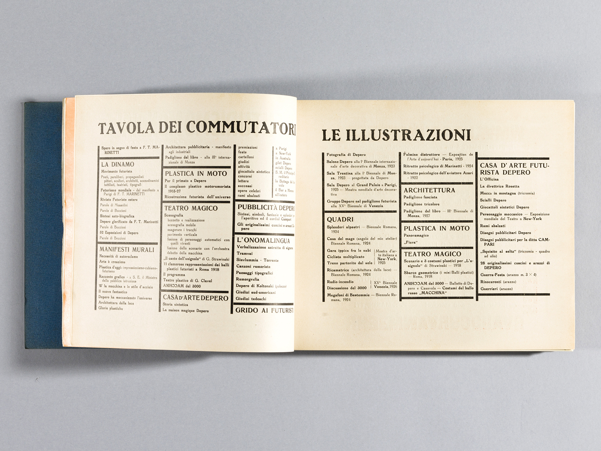
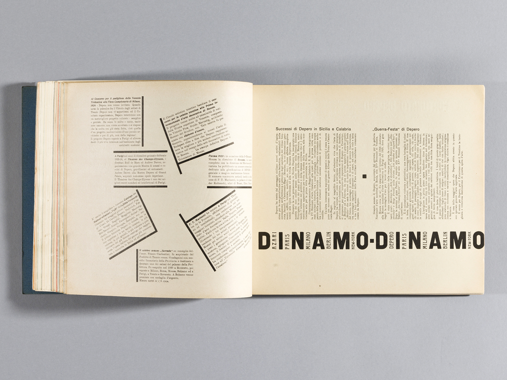
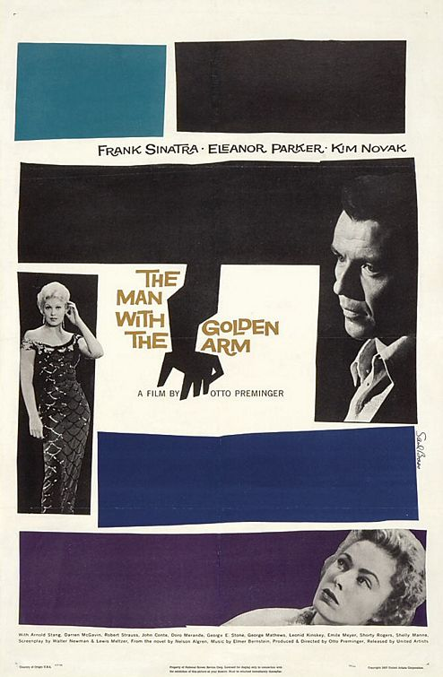

Women of Horror is a magazine that focuses on the intersection between the genre of horror in a broad sense and the the representation and conceptualization of femininity.
Every issue gathers critical articles about a particular work of interest or relevant theme, allowing the reader to explore different perspectives and gazes on the same topic, as well as acquire an in-depth theoretical knowledge about women and mostruosity.
The magazine is thematically organized around three main areas, each one linked to one main character from a relevant fiction horror book written by a woman or that has one as the protagonist. The articles contained in the issues are all brief essays considering the literary work under a scientific way.
Up until now the website contains:
-Bloodsucking Vampires, here the character under consideration is Carmilla the vampire, from the homonymous gothic novella written by Sheridan Le Fanu. The story is narrated by a young woman preyed upon by a female vampire named Carmilla, later revealed to be Mircalla, Countess Karnstein (Carmilla is an anagram of Mircalla). The character is a prototypical example of the lesbian vampire, expressing romantic desires toward the protagonist. The novella, predating Bram Stoker's Dracula (1897) by 26 years, notably never acknowledges homosexuality as an antagonistic trait, leaving it subtle and morally ambiguous.
-Electric Monsters, which studies the well-known figure of Frankenstein’s monster. The “creature”, is the main character of the notably famous work of Mary Shelley published in 1818, which tells the story of Victor Frankenstein, a young scientist who creates a sapient creature in an unorthodox scientific experiment.
-Horny Cannibals, puts under the scope the movie Raw, a 2016 French-Belgian coming-of-age horror drama film written and directed by Julia Ducournau, and starring Garance Marillier, Ella Rumpf, and Rabah Nait Oufella.The plot follows a young vegetarian's first year at veterinary school, where she tastes meat for the first time and develops a craving for flesh. The film premiered at the 2016 Cannes Film Festival on 14 May 2016 and was theatrically released in the United States on 10 March 2017 by Focus World, and in France on 15 March 2017 by Wild Bunch. The film received critical acclaim, with praise for Ducournau's direction and screenplay, though was met with some controversy for its graphic content.
The resource collects issues organized in thematic magazines and enriched with meaningful metadata for active use of the contents. The portal can be viewed according to 6 typographic styles, each referring to a different period, mostly based on original resources (such as magazines, printed books, computer graphics, and more), which were edited accordingly to our needs.
Each issue of the magazine shows the articles side by side on the same web page and allows for a comparative analysis of the available metadata.A the moment the website is composed of three main Html pages:
-The homepage, index.html in our repository, provides information about the overall structure of Women of Horror. This page, as well as all the others, contains navigation buttons that allow the users to navigate through the different styles. From here the user can select one of the three issues available, at the moment only Electric Monsters is available.
-The issue page (issue.html), it contains each text, marked up and uploaded through an ajax function. The user can simply select the article he requires and enjoy the reading experience. Also, in order to allow a comparative analysis of the available metadata, it is possible to visualize two articles side by side.
-The Documentation page (documentation.html), currently displayed, contains the documentation of the project.
The articles were tagged with significant metadata mainly using classes. Each metadata tag, mainly <span> tags, specify the following metadata types as classes:
-"person", every time a writer or a scholar is mentioned in the articles
-"character", where the characters from the fictional books under consideration are mentioned
-"literaryWork", each time a fiction or non-fiction book is regarded
-"concept", in order to highlight the main recurring themes an concepts studied in the articles available
-"refOther", refers to all the external references explicitly quoted in the articles
-"refFrankenstein", linked to the explicit quotes extracted from Shelley's book.
By selecting a checkbox, the articles scroll to the first occurrence of the selected data, while every occurrence is highlighted with a random background color. By clearing the checkbox, the text backgrounds become transparent again. Moreover, all the metadata found by the checkboxes are showcased on tabs, and, by clicking the specific name, the user is brought to the part in the text where the metadata is stored for a more specific analysis. This is obtained through a few Javascript functions and the use of Jquery selectors, again on an already marked-up text.
As already mentioned, we offer the possibility to compare two texts side by side thanks to a dedicated function and employing a JSON file containing the Html of the articles.
Each one of the styles was inspired by original sources, carefully selected after an accurate research to offer real content from each epoque, from the font to the design. The process of selection of visual references and subsequent editing by the developers is detailed in the following paragraphs. In the next sections, we will guide you through the design of each theme, explaining the decisions behind the design. You can click on the style names in the titles to change the theme.
Baroque style is a facinating style in fine arts and also architecture.
it was a challenge to apply its fundamentals on a website
Themes recurents en Baroque
we represent it the Warm colors by; gold color & black
We refered to Death by the dark dusk color in the background and instability by an empty old paper
Font used is DM Serif Display, this typefaced is similar to the ones used in Baroque style, more like a serif script style.
In 1814, the first steam-powered printing press was introduced at The Times newsroom in London. This technological turning point opened a centrury in which newspaper truly became cheaper and popular also among the masses.
Murder broadsides are one of the earliest examples of mass street literature.
By the first decade of the 19th century a thriving business in crime and execution broadsides had developed in England. These single sheet and frequently sensational publications were often sold at the execution itself, featuring lurid descriptions of the crime and trials, or even the confessions and last words of convicts on the scaffold, sometimes in the form of poetry.
They followed a fairly consistent formula: a sensationalist title in a fat face, bold condensed sans serifs and heavy Clarendon-esque slab serifs for the title and subtitles accompanied by large gruesome wood engravings, showing the execution scene or vignettes of the crime scene.
For the creation of this style, we have drawn inspiration directly from historical documents, from which we extracted images of the borders and other decorative woodcuts:
 In the attempt to reproduce the most widespread IX century typefaces, The Magazine main title's font is inspired by typical 1800 english wood types by Loius Pouchée.

Similarly, for the headings of the magazine, we adopted a condensed sans-serif typeface with a letterpress-like texture in the Issue page and a Fat-face typeface in the Homepage.
For the body of the text and the body titles we chose Clarendon, a slab-serif typeface released in 1845.
To reproduce the typical newspaper layout the text has been formatted into column with an indentation at the beginning of every paragraph. As we could see from historical references, the numer of column could vary. For this reason, in the issue page we considered the side by side text-comparison as an exaple of a two-column layout with a decoration in between. Whereas in the Homepage and in the Documentation page, a simpler 3 column layout with minimum margin between columns was chosen.
All borders has also been set as a reprodution of typical double borders or solid black border.
Finally, a polygon shape and a filter has been applied to the images to reproduce the newspaper style of the images
Fortunato Depero (30 March 1892 – 29 November 1960) was an Italian futurist painter, writer, sculptor, and graphic designer. After attending the Scuola Reale Elisabettiana in Rovereto, around 1913 he approaches Italian Futurist Movement. Since 1914 he lives in Rome where, after meeting Balla, Cangiullo, Marinetti and the art dealer Sprovieri, he becomes part of the Futurist Movement. In the early 1915 he undertakes the construction of the “complessi plastici”, and in March he signs with Balla the important Manifesto of the Futuristic Reconstruction of the Universe.
The design of this style was freely inspired by the famous painting Depero created for the promotion of Aperol Campari from 1924 onward.
For Campari, Depero over the years, at least until 1931, created dozens and dozens of projects for colorful posters and black and white sketches. Of the former, only a few were actually used, precisely because Campari verified that his ‘client-type’ was the middle-bourgeois who, rather than looking at the posters on the streetwalls, used to read quietly the newspaper sitting at the bar. And therefore the black-white advertisements were the ones actually published.
What we tried to achieve was expressing his extreme linearity and conciseness aimed to immediately communicate the message. Because of this, the color scheme chosen is extracted from his most famous works of art. For what concerns the choice of colors and of paratextual elements, we decided to take inspiration directly from original artifacts of the period.
The image in the homepage is taken from the 1928 poster Il Bevitore (Drinker). The color scheme of the page is also extracted from this creation and the entire style is dominated by primary colors directly taken from the original artifacts through color picker software.
In order to express the futuristic approach of Depero we mixed different fonts, so to hold the variety of typographic styles that coexisted in one of the most known works of Depero: the Depero futurista 1913–1927, most known as the Bolted Book, published in 1927. It was a showcase portfolio relating to a specific period (1913–1927), but also a means of experimentation both in terms of graphics and contents.
To furthermore achieve an aesthetic resemblance to it, we tried to subvert the usual order of language on a page through the use of different characters, spacing, font size, and indentation.
Some open-source softwares, such as Whatthefont and MyFonts , have been very helpful to match the exact fonts of some pieces of text extracted by the Bolted Book.
Anyway, lots of results lead to paid packages, so we settled on a compromise between high resemblance and free downloadable options. As a personal choice, we decided to prioritize readability in order to guarantee a more pleasant experience for the user.
 Bibliography
https://www.continiarte.com/en/artist/fortunato-depero/
Saul Bass ( 1920 – 1996) was an American graphic designer and Oscar-winning filmmaker, best known for his design of motion-picture title sequences, film posters, and corporate logos.
During his 40-year career, Bass worked for some of Hollywood's most prominent filmmakers, including Alfred Hitchcock, Otto Preminger, Billy Wilder, Stanley Kubrick and Martin Scorsese. Among his best known title sequences are the animated paper cut-out of a heroin addict's arm for Preminger's The Man with the Golden Arm, the credits racing up and down what eventually becomes a high-angle shot of a skyscraper in Hitchcock's North by Northwest, and the disjointed text that races together and apart in Psycho.
Before the advent of Bass's title sequences in the 1950s, titles were generally static, separate from the movie, and it was common for them to be projected onto the cinema curtains, the curtains only being raised right before the first scene of the movie. In 1960, Bass wrote an article for Graphis magazine called "Film Titles – a New Field for the Graphic Designer," which has been revered as a milestone for "the consecration of the movie credit sequence as a design object."One of the most studied film credit designers, Bass is known for integrating a stylistic coherence between the designs and the films in which they appear.
In this project the theme under consideration takes inspiration from some of the most famous posters and title sequences Bass realized in his career, in particular from the collaboration with Alfred Hitchcock and Otto Preminger .
The layout of the Homepage was inspired by the theatrical poster made for 1955 Preminger’s movie The Man with the Golden Arm portraying a jagged arm and off-kilter typography
It also been take into account the typical stylistical choices Bass uses in his career, in order to represent this, some element such as the cards showing the issues and some <p> elements are enclosedinto poligonal shapes. The color scheme is extracted from tha poster
designed for Preminger's movie Anatomy of a murder, it is worth mentioning that the palette chosen is often used by Saul Bass in the majority of his works.
The structure of the issue page, on the other hand, tries to reproduce the opening titles sequence realized for the already mentioned The man with the golden arm.
Saul stated that,
“The intent of this opening was to create a mood spare, gaunt, with a driving intensity… [that conveyed] the distortion and jaggedness, the disconnectedness and disjointedness of the addict’s life the subject of the film.”
We tried to achieve this by inserting png images of straight lines and black thick borders, it is worth mentioning that the color scheme was inverted in order to maintain a continuity with the other pages of the theme. Also, to offer the idea of dynamism and movement so care to Bass, the main text element is slightly skewed and the card display a 2d animation when hovering.
As it is being said some opensource softwares, such as Whatthefont and MyFonts , have been used to find the fonts of some pieces of text. Anyway, lots of results lead to paid packages, so we settled on a compromise between high resemblance and free downloadable options.
The main fonts used in the theme are taken from salbass.net, created by Brensan Dawes that contains the free font download called “Hitchcock”, the font was was created by designer Matt Terich as an homage to the iconic lettering that so often appeared in Bass’ title work. The font is not a faithful digitization of any particular title sequence or poster — in fact, type designer Nick Shinn notes that Bass didn’t do the actual lettering and veteran Robert Trogman adds that Dave Nagata did most of the drawings — but it does give a general sense of Bass’ rough, hand-cut style.
The font “Tony’s Tree is being used cause of its resemblance to theoriginal font used in The Man with the Golden Arm titles.
the Bassanova font used throughout the website, in particular for titles, is display font inspired by lettering on the “Love in the Afternoon” movie poster by Saul Bass. The font captures the minimalistic, yet very distinct look that is so typical for his designs.
The fonts “OPTIVenus-BoldExtended” an “News Gothic Regular” are the ones used in the opening credits of Psycho, the notorious 1960 movie from Hitchcock and in the website they are being used for <p> and <a> elements.
Bibliography
Saul Bass: A Life in Film & Design Jennifer Bass & Pat Kirkham, Laurence King Publishers, 2011
Saul Bass: Anatomy of Film Design, Jan-Christopher Horak
Y2k aesthetic can be defined as a collective design trend that unfolded between 1997 and 2003 and traversed a variety of media: from pop culture and music video design to fashion, architecture, interior and industrial design and so on.
In the western countries, the turn of the millennium saw design trends move away from the grunge and grit of the 90s, instead favoring a more bright, minimal, futuristic visual taste. This turn was indeed nurtured by an optimistic cultural environmend, carachterized by economical prosperity and technological innovation.
The end of the IX century saw the internet going mainstream enhancing the sense of open possibilities of connection and exchange. Windows 95 operating system, with its revolutionary simplified user interface was a real benchmark; in 1999 cross network texting for mobile phones was firstly launched; in general, the spreading of technologies such as Compact discs, DVDs, PCs (and consequently internet access), saw an exponential rise across the first decade of the aughs.
The design of this theme draw inspiration from the most relevant technological and hence visual changes as well as the underlying conceptual basis that carachterized the y2k era.
In this theme we tried to predict how the UI trend would be in 10 years.
It is Not really easy to predict what trend is going to explode in the next 10 years.
UI design is improving and moving fast.
However in the movies that they predict the future they often use neon lights amd 3D floating shapes when it comes to high technology.
For that reason we took star wars as a reference, the goal was not create a futuristic star wars theme more than inspire a little bit from it.
UI used:
Neon light + shadows
Flaoting 3D shapes
Poppins font, is sans serif typface that goes well with a futiristic UI